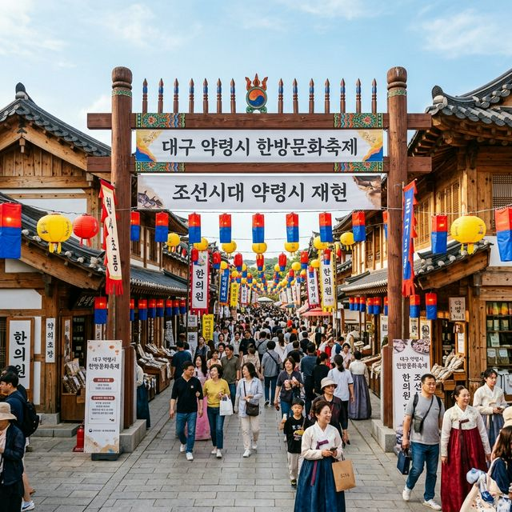
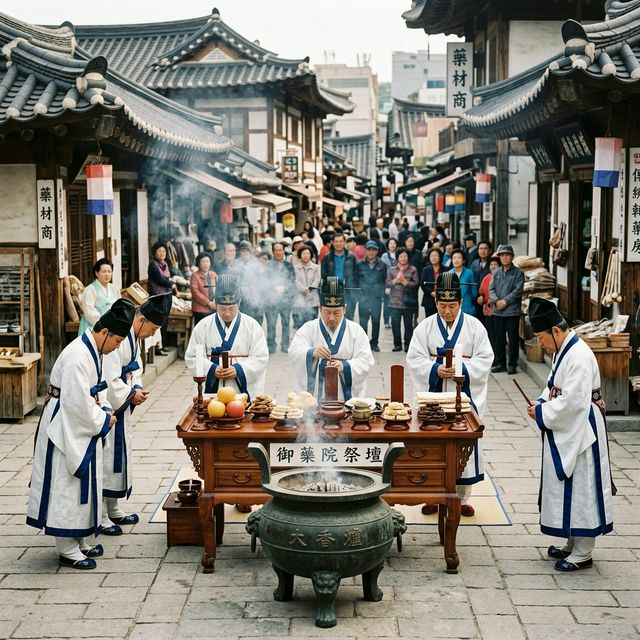
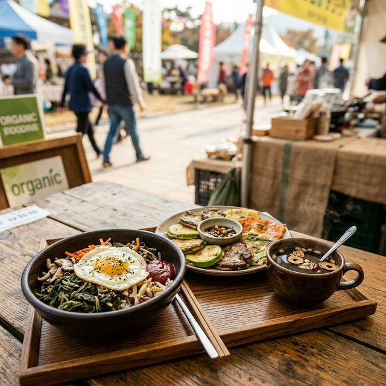

대구 약령시
한방문화축제 2026 가이드 — 350년 전통의 건강 나들이와 체험 명당 총정리
"한방의 숨결이 살아 숨 쉬는 대구 약전골목의 368년 역사를 만나다!"
따스한 5월의 햇살이 대구 도심을 비출 때면, 남성로 언덕에서부터 불어오는 바람 속에 은은하고 달큰한 한약재 향기가 배어 있습니다. 조선 효종 시대부터 이어져 온 전국 최대의 약재 시장, 대구 약령시가
올해로 개장 368주년을 맞이해 '2026 대구 약령시 한방문화축제'라는 이름으로 그 거대한 막을 올립니다. 단순히 오래된 시장의 축제라고 생각하신다면 오산입니다. 이곳은 수백 년간 우리 민족의 생명을
지켜온 한방의 지혜가 현대적인 감각으로 재탄생한, 살아있는 역사 박물관이자 오감을 자극하는 거대한 실험실과도 같습니다.
이번 축제는 건강에 대한 관심이 어느 때보다 높은 요즘, 남녀노소 누구나 즐겁게 우리 전통 의학의 정수를 경험할 수 있도록 설계되었습니다. 콧노래가 절로 나오는 전통 음악과 함께 골목마다 피어오르는
약탕기의 흰 연기, 그리고 그 속에서 발견하는 뜻밖의 재미는 방문객들에게 단순한 나들이를 넘어선 깊은 정서적 충만감을 선사할 것입니다. 대구의 역사적 자부심이 깃든 약전골목에서, 올봄 여러분의 몸과
마음을 채워줄 최고의 힐링 코스를 제안합니다.

[ 대구 약령시 한방문화축제 메인 게이트 / AI 제작 이미지 ]
1. 2026 대구 약령시 한방문화축제 기본 정보
368년이라는 경이로운 시간 동안 한자리에서 명맥을 이어온 대구 약령시는 그 역사적 무게만큼이나 고결하고 세련된 모습으로 2026년의 봄을 맞이합니다. 올해 축제는 '한방의 길, 대구약령시로
통하다'라는 핵심 슬로건을 바탕으로, 현대인의 지친 심신을 전통의 지혜로 치유하고자 하는 소망을 담고 있습니다. 축제의 주 무대인 남성로 약전골목 일대는 행사 기간 전 구역 차량 통제가
이루어지며, 오직 보행자들을 위한 건강한 문화의 거리로 탈바꿈하여 방문객들에게 쾌적한 관람 환경을 제공합니다.
축제가 개최되는 5월 7일부터 10일까지의 4일간은 대구의 기온이 가장 쾌적하게 유지되는 황금기이기도 합니다. 행사장은 평소보다 훨씬 활기찬 상인들의 외침과 축기 가득한 공연자들의 열기로 가득 차며, 골목
곳곳에는 쉼터와 체험 부스가 촘촘하게 배치되어 한순간도 지루할 틈을 주지 않습니다. 대구 약령시 한방문화축제는 이미 문화체육관광부가 선정한 우수 축제로 인정받은 만큼, 그 운영의 묘미와 프로그램의 깊이가
남다릅니다. 여러분이 발을 들이는 순간, 도심 속 고층 빌딩들 사이로 숨겨진 300년 전의 시간이 선물처럼 펼쳐질 것입니다.
이 기간 동안 방문객들은 대구의 뜨거운 열기보다 더 뜨거운 전통의 생명력을 체감하게 됩니다. 특히 올해는 해외 관광객들을 위한 다국어 서비스와 디지털 가이드가 대폭 강화되어, 우리 한방의 우수성을 세계에
알리는 글로벌 축제로서의 면모를 확실히 합니다. 친구와 연인, 혹은 부모님을 모시고 오는 가족 단위 여행객 모두에게 맞춤형 동선을 제공하므로, 방문 전 공식 홈페이지의 행사장 지도를 미리 확인해보시는 것을
권장합니다.
| 📅 축제
일정 |
2026년 5월 7일(목) ~ 5월 10일(일) |
| 📍 행사
장소 |
대구광역시 중구 약전골목 일원 (남성로) |
| 🕒 운영
시간 |
오전 10:00 ~ 오후 20:00 (프로그램별 상이) |
2. 전통의 격을 높이는 '고유제'와 개막식
축제의 시작을 알리는 '고유제(전통 제례)'는 대구 약령시만이 가질 수 있는 가장 가치 있는 무형의 자산입니다. 조선 시대 약재 진상을 앞두고 국왕의 어명에 따라 거행되었던 공식
의식을 완벽하게 고증한 이 고유제는, 약령시 보존위원회 관계자들이 예복을 갖추고 정성껏 술을 올리며 올 한 해 약진의 번창과 팔도 백성들의 무병장수를 기원하는 행사입니다. 제단 위에 차려진 진귀한 약재들과 향
연기가 어우러진 이 광경은 보는 이로 하여금 절로 숙연해지는 감동을 줍니다.
개막식 당일 오전 11시는 축제의 하이라이트 중 하나인 대규모 취타대 퍼레이드가 펼쳐지는 시간입니다. 우렁찬 나팔 소리와 북소리가 약전골목의 좁은 입구를 가득 채우며 행진이 시작되면, 관람객들은 길가에 서서
박수로 축제의 시작을 환영합니다. 이어지는 개막 퍼포먼스에서는 지름 2m가 넘는 대형 약탕기에 불을 지피는 점등식이 거행되는데, 이때 뿜어져 나오는 하얀 증기는 마치 약령시의 오랜 영혼이 깨어나는 듯한
환상적인 장관을 연출합니다. 이 상징적인 의식은 축제를 찾는 모든 이들에게 건강한 기운이 전달되기를 바라는 마음이 담겨 있습니다.
또한, 전국의 한약사들과 숙련된 전문가들이 모여 실력을 겨루는 '전승기예 경연대회'는 놓쳐서는 안 될 구경거리입니다. 단 한 치의 오차도 없이 약재를 일정한 두께로 썰어내는 '작두질' 소리와 수천 가지 약재의
이름을 척척 맞히는 '약재 장인'들의 모습은, 기계가 대신할 수 없는 정성과 집중의 미학을 보여줍니다. 이들의 손놀림 하나하나를 가까이서 지켜보다 보면, 우리 선조들이 얼마나 섬세하게 사람의 생명을 다루었는지
그 지극정성 가득한 문화의 한 단면을 깊이 있게 이해하게 될 것입니다.

[ 엄숙한 분위기의 전통 고유제 현장 / AI 제작 이미지 ]
3. 세 가지 테마로 즐기는 '한방의 길'
2026년 축제 현장은 방문객의 취향과 목적에 따라 최적화된 동선을 제공하는 세 가지 테마 길로 구성되었습니다. 첫 번째 섹션인 '한방이 풍성하길'은 서편 입구 근처에 조성된
대규모 먹기리 구역입니다. 이곳에서는 일반적인 축제 음식이 아닌, 약령시만의 강점을 살린 특화 메뉴들이 즐비합니다. 은은한 한약 육수에 삶아낸 족발부터, 각종 마른 약재 가루를 넣어 빚은 떡, 그리고 인삼
향이 배어있는 이색 튀김까지 평소 접하기 힘든 건강한 별미들이 여러분의 미각을 자극합니다.
두 번째 '한방이 가득하길' 구역은 축제의 본질인 지식과 정통성을 채울 수 있는 지점입니다. 대구 한의약 박물관과 연계된 외부 특별 전시 부스에서는 실제 맥을 짚는 법부터,
동의보감에 기록된 약초들의 실물을 직접 관찰하고 향을 맡아볼 수 있는 교육 프로그램이 상시 운영됩니다. 이곳은 아이들에게는 훌륭한 생태 교육장이 되고, 어른들에게는 내 몸의 체질을 다시 한번 생각해보게 만드는
사색의 공간이 됩니다. 약전골목 상인들이 직접 들려주는 약초 이야기는 백과사전보다 더 생생하고 흥미진진한 삶의 지혜로 가득 차 있습니다.
마지막으로 '한방이 재미있길' 구역은 최근 트렌드인 감성 피크닉과 전통을 결합한 공간입니다. 캠핑 의자와 빈백이 놓인 이곳에서는 젊은 층을 타겟으로 한 '한방 칵테일'이나
'전통차 페어링' 클래스가 열립니다. 한방은 고루하다는 편견을 깨기 위해 기획된 이 공간은 인스타그램에 올리기 좋은 세련된 포토존이 가득하며, 전통과 현대가 조화롭게 공존하는 대구의 현재를 가장 잘 보여주는
장소이기도 합니다. 조용히 흐르는 음악과 함께 약차 한 잔의 여유를 즐기다 보면, 어느새 당신의 스트레스 지수가 낮아지는 것을 경험하게 될 것입니다.
4. 하이라이트 이벤트: 황금 둥굴레를 찾아라!
참여형 프로그램 중 관람객들의 발길이 끊이지 않는 대박 코너는 바로 '보물찾기: 황금 둥굴레를 찾아라'입니다. 행사장 구석구석에 숨겨진 보물 카드를 찾아내면 실제 황금으로 도금된
둥굴레 모형이나 지역 특산 한약재 세트, 혹은 축제장에서 현금처럼 쓰는 약령상품권 등으로 교환해 주는 매력적인 이벤트입니다. 골목 언저리부터 낡은 한옥 담벼락 사이까지, 평소라면 그냥 지나쳤을 약령시의 보석
같은 공간들을 게임을 하듯 탐험하게 만듭니다. 이 미션에 몰두하다 보면 자연스럽게 약령시의 지리에 익숙해지게 됩니다.
더불어 최신 IT 기술을 접목한 '약령한방대첩' AR 게임은 축제의 디지털 혁신을 상징합니다. 자신의 스마트폰에 축제 전용 앱을 설치하면 화면 속에 가상의 귀여운 약초 캐릭터나
해결해야 할 퀴즈들이 나타납니다. 골목마다 배치된 마커를 인식해 가상의 한약을 조제하고 마을 사람들을 치료하는 미션을 수행하면 디지털 배지와 함께 실질적인 혜택을 받을 수 있습니다. 이는 전통 시장이라는
공간에 강력한 몰입감을 부여하며, 특히 초등학생 자녀를 둔 가족들에게 최고의 인기 프로그램으로 손꼽힙니다.
이러한 이벤트들은 단순히 경품을 주는 것에 목적이 있지 않습니다. 방문객들이 능동적으로 약령시의 역사적 건축물들을 살펴보고, 그 속에 깃든 의미들을 스스로 체득하게 하려는 정교한 기획의 산물입니다. 황금
보물을 찾는 설렘과 디지털 미션을 완수하는 성취감이 어우러져, 대구 약령시는 더 이상 어렵고 낯선 곳이 아닌 즐거움이 가득한 놀이터로 당신의 기억 속에 남게 될 것입니다. 한 손에는 보물 지도를, 다른 한
손에는 스마트폰을 들고 약전골목의 신비한 보물들을 향해 발길을 내디뎌 보십시오.
5. 도심 속 힐링, '한방 피크닉'과 키즈 놀이터
대구의 도심은 늘 바쁘게 흘러가지만, 축제 기간 중 현대백화점 대구점 뒤편으로 이어지는 광장은 '한방 피크닉 존'이라는 이름의 평화로운 섬으로 변신합니다. 회색 빌딩 숲 사이에
펼쳐진 초록색 인조 잔디와 그 위에 점점이 박힌 예쁜 인디언 텐트, 그리고 감성적인 라탄 소품들은 마치 숲속 캠핑장에 온 듯한 해방감을 선사합니다. 이곳의 특징은 모든 소품에서 은은한 한방 향기가 배어
나온다는 것인데, 소나무 재질의 의자와 한방 향패가 배치되어 있어 앉아 있는 것만으로도 산림욕을 하는 듯한 상쾌함을 느끼게 합니다.
아이들과 함께한 부모님이라면 '키즈 한방 놀이터'를 필수로 방문해야 합니다. 이곳은 단순히 뛰어노는 공간이 아니라 아이들의 손 감각과 창의력을 자극하는 다양한 체험 활동의
본부입니다. 알록달록한 한약재를 직접 으깨어 비누를 만들거나, 계피와 당귀를 섞어 천연 벌레 퇴치 방향제를 만드는 과정은 아이들에게 잊지 못할 '작은 장인'의 경험을 제공합니다. 아이들이 고사리손으로 정성껏
만든 결과물을 자랑스럽게 보여줄 때 부모님의 미소도 한방의 약효만큼이나 훈훈하게 피어오를 것입니다.
이 공간은 또한 독서와 휴식이 결합한 북스테이 기능도 겸하고 있습니다. 대구 지역 독립 서점들과 협업하여 선정한 '건강과 마음 치유' 테마의 책들을 편안하게 빌려 읽을 수 있으며, 주기적으로 진행되는 야외
요가와 명상 세션은 복잡한 일상의 번뇌를 잠시나마 씻어내기에 충분합니다. 따뜻한 햇살 아래 누워 눈을 감고, 약령시가 내뿜는 수많은 약재들의 향기를 호흡하며 내 몸의 감각을 하나씩 깨워보세요. 이곳에서의 한
시간은 당신의 한 주를 버틸 수 있는 강력한 활력제가 될 것입니다.

[ 한방 약초 비빔밥과 건강 주전부리 / AI 제작 이미지 ]
6. 한의체험센터의 실전 예방 의학
대구 약령시 축제의 가장 큰 실질적 혜택은 전문 의료진과 함께하는 '한의체험센터'에서의 직접적인 건강 관리입니다. 평소 한방 치료의 효능을 궁금해했으나 시간과 비용 문제로
주저했던 분들에게는 이곳이 최고의 건강 기지가 됩니다. 대구광역시 한의사회 소속의 베테랑 한의사들이 직접 상담 데스크에 상주하며, 내방객들을 위해 1:1 체질 분석과 건강 상담을 진행합니다. 혀의 상태나 맥의
파동을 통해 내 몸의 약한 부분을 짚어주는 과정은 마치 나만을 위한 건강 예보를 듣는 것과 같습니다.
특히 올해는 '현대인 고질병 타파' 섹션이 강화되었습니다. 장시간 나쁜 자세로 모니터를 보는 직장인들과 수험생들을 위해, 경직된 근육을 풀어주는 추나요법 시연과 바른 자세 교정
체험이 적극적인 호응을 얻고 있습니다. 전문가의 숙련된 손길로 척추 라인을 자극해주면, 막혀있던 기혈이 순환되며 머리가 맑아지는 놀라운 경험을 하게 됩니다. 이는 단순한 체험을 넘어, 내 일상의 생활 습관을
어떻게 개선해야 할지 원리를 깨닫게 하는 소중한 교육의 장이기도 합니다.
또한, 한의체험센터 내부에서는 '나만의 맞춤 한약 조제' 시뮬레이션도 가능합니다. 상담 결과를 바탕으로 내 체질에 보충이 필요한 약재들을 추천받고, 이를 직접 저울에 달아보며 조제 과정을 체험해보는 것입니다.
내가 먹는 약재가 어떤 과정을 거쳐 효능을 내는지 눈으로 직접 확인하는 과정은 한방에 대한 신뢰를 두텁게 합니다. 평소 "한방은 비과학적이다"라는 편견을 가졌던 분들도, 이곳에서 체계적인 진단 프로세스를
경험하고 나면 우리 전통 의학이 가진 논리적 근거와 과학적 깊이에 대해 고개를 끄덕이게 될 것입니다.
7. 교통 및 주차 안내 — 메트로센터의 전략적 활용
축제가 열리는 남성로 약전골목은 그 자체로 이미 하나의 거대한 문화재 구역과 같아 도로가 매우 좁고 주차 공간이 극히 한정적입니다. 축제 기간에는 보행자 안전을 위해 차량 진입이 전면 차단되므로,
가장 스마트한 방문법은 대중교통을 이용하는 것임을 거듭 강조합니다. 대구 지하철 1·2호선이 교차하는 교통의 요지 반월당역 14번 출구에서 지상으로 나오면, 약 5분 정도 걷는
것만으로도 축제의 활기찬 함성 소리를 마주할 수 있습니다. 이미 교통 접근성이 전국 축제 중 최상위권인 셈입니다.
하지만 멀리서 거동이 불편하신 어르신이나 어린 아기를 동반하여 부득이하게 자가용을 이용해야 한다면, 행사장과 도보 7분 거리인 대구 메트로센터 주차장을 공략하는 것이 정답입니다.
이곳은 지하철 역사와 연결된 거대 쇼핑몰 규모만큼이나 주차 대수가 넉넉하며, 입출구가 사방으로 뚫려 있어 혼잡한 도심 교통 체증을 그나마 피하기 좋습니다. 만약 이곳마저 만차라면 현대백화점 대구점 주차장이나
인근 유료 주차장을 고려해야 하는데, 주말 오후에는 대기 시간이 1시간을 훌쩍 넘길 수 있으니 가급적 오전 10시 30분 전에는 입차를 완료하는 부지런함이 필요합니다.
한 가지 팁을 더 드리자면, 대구시에서 운영하는 '스마트 주차' 앱을 미리 설치하면 축제장 주변 공영 주차장의 실시간 빈자리 현황을 확인할 수 있습니다. 또한 축제장 내 통합 안내소에서는 대중교통 이용
확인증을 제시할 경우 소정의 기념품이나 체험 할인권을 제공하는 이벤트도 종종 열리니, 환경도 보호하고 혜택도 챙기는 알뜰한 여행자가 되어 보시기 바랍니다. 대구의 중심가인 만큼 택시도 매우 잘 잡히는
구역이므로, 반월당 인근에서 내려 조금 걷는 것이 주차 스트레스 없이 축제를 가장 온전히 즐기는 방법입니다.
8. 약전골목의 숨은 맛집과 연계 투어
약령시 축제 구경으로 활기를 채웠다면, 이제는 그 기운을 맛있는 음식으로 굳힐 차례입니다. 약전골목에는 30년, 50년의 시간 동안 가업을 이어온 진정한 노포 숨은 고수들이 숨어 있습니다. 특히 한약재의
원조답게 십여 가지 약재를 아낌없이 투입해 한 입만 먹어도 속이 뜨거워지는 '약전삼계탕'은 이곳의 살아있는 전설입니다. 또한 대구 특유의 구수한 콩가루 향이 일품인
'누른국수'는 부드러운 면발과 멸치 육수가 어우러져, 축제장의 분주함 속에서도 잠시 숨을 고르게 하는 든든한 한 끼를 선사합니다.
식사 후에는 약령시와 맞닿아 있는 '대구 근대골목 투어'로 자연스럽게 동선을 이어보세요. 3.1 만세운동길의 계단을 오르며 대구의 근현대사를 돌아보고, 빨간 벽돌이 인상적인
계산성당 앞에서 인생 사진을 남기는 코스는 여행의 깊이를 더해줍니다. 이 코스는 도보로 30분 내외면 충분히 둘러볼 수 있어 약령시 축제와 결합하기에 더할 나위 없이 완벽한 조합입니다. 역사와 종교, 그리고
민족의 투쟁사가 어우러진 이 길 위에서 여러분은 지금의 대구가 가진 독특하고 단단한 분위기를 오롯이 느끼게 될 것입니다.
만약 전통 차 한 잔의 운치를 더 즐기고 싶다면, 찻잔 속에 건강이 피어나는 '미도다방'을 추천합니다. 오랜 세월 대구 유림들의 사랑방 역할을 해온 이곳은, 도심 속이라고 믿기
힘든 예스러운 소파와 한복을 차려입은 친절한 직원들이 반겨주는 곳입니다. 진한 쌍화차 한 잔에 노른자를 띄워 마시며, 창밖으로 지나는 축제의 풍경을 바라보며 사색에 잠겨보세요. 현대적인 카페 체인점에서는 결코
느낄 수 없는, 시간이 멈춘 듯한 평온함이 당신의 이번 대구 여행을 더욱 특별하게 마무리해줄 것입니다.
9. 맺음말: 368년의 자부심, 2026 한방문화축제
대구 약령시는 수백 년간 수많은 전염병과 전쟁 속에서도 사람을 살리는 약재의 향기를 결코 그친 적이 없는, 우리 민족의 거대한 생명 정원과도 같습니다. 368년 동안 한자리에서 전통을 지켜온 상인들의 묵직한
고집과 현대의 세련된 기술이 만난 2026 대구 약령시 한방문화축제는, 단순히 과거를 보여주는 행사를 넘어 '내 삶을 어떻게 더 건강하게 사랑할 것인가'에 대한 살아있는 해답을
제시합니다. 축제장을 가득 메운 약탕기의 증기는 지친 우리 가슴에 따뜻한 훈기를 불어넣어 줄 것입니다.
사랑하는 부모님의 손을 잡고, 혹은 연인과 함께 이 거리를 걸어 보십시오. 골목마다 배어있는 역사적 서사와 코끝을 자극하는 건강한 향기 속에서, 우리는 삶의 속도를 잠시 늦추고 자연이 주는 위대한 치유의 힘을
발견하게 될 것입니다. 전통은 박제된 유물이 아니라, 지금 이 순간 우리 곁에서 호흡하며 미래를 향해 뻗어 나가는 생동하는 에너지고 지혜입니다. 이번 주말, 대구 약전골목의 300년 된 우정 어린 환대 속에
몸을 맡겨 보시는 건 어떨까요?
바람에 실려 온 한약재 향기는 여러분의 건강한 2026년을 향한 첫 번째 신호탄이 될 것입니다. 대구 약령시가 선사하는 고귀한 시간의 결을 만끽하며, 일상의 스트레스는 저 멀리 던져두고 오직 '나 자신'과
'동행자'에게 집중하는 충만한 시간을 보내시길 바랍니다. 축제가 끝나고 현장을 떠날 때, 여러분의 마음속엔 은은한 쌍화차 향기보다 더 짙고 감동적인 대구의 인심과 활기찬 추억이 가득 차 있을 것을 확신합니다.
#대구약령시한방문화축제
#대구축제
#5월가볼만한곳
#대구나들이
#한방축제
#약전골목
#대구여행코스
#가족나들이추천
#국내여행지추천
#축제정보